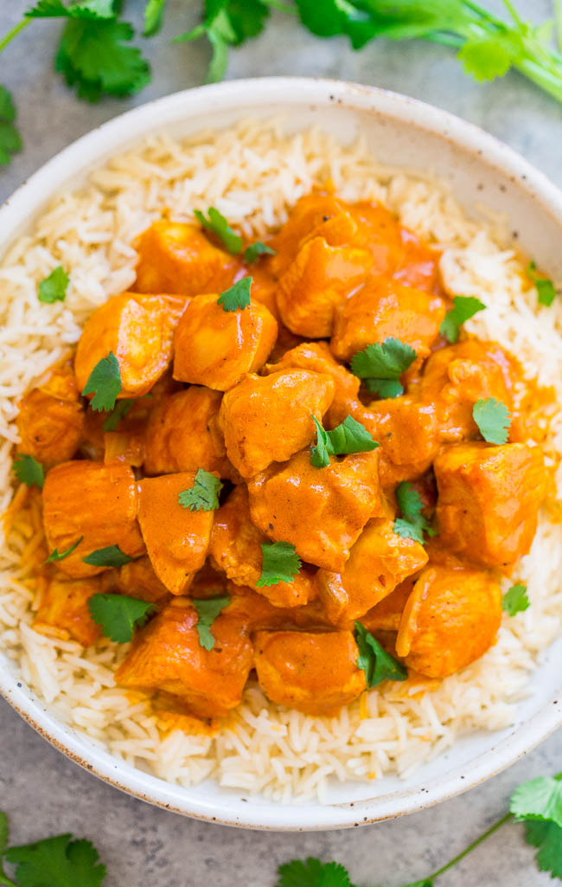

Indian Butter Curry

Indian cuisine has seen an explosion of popularity in recent years. One such dish is Indian butter Curry.
this salty, savory, and sweet dish is one of the most popular dishes among the Indian food boom.
This recipe is one you can make at home and it is a one pot dish. It is a simple dish, cooked in two easy
parts the chicken, and the sauce. The two are then combined and the dish is complete. Now let's get
into the recipe.
Ingredients
For the Chicken
- 300 grams of boneless chicken breast
- 1 tbsp ginger
- 1 tbsp garlic paste
- 1 tbsp of red chili powder
- salt to taste
- 1 tbsp of oil
For the Curry
- 500 grams of canned tomatoes
- 100 grams roughly cut onions
- 1 tbsp garlic paste
- 50 grams raw cashew
- 1 tsp kasoori methi
- 1/2 tsp garam masala
- 4 tbsp sugar
- 2 tbsp kashmiri chilli powder
- 5 tbsp butter
- 3 tbsp cream
- 1.5 tbsp White Vinegar
- Salt to taste
Recipe
- Marinate the chicken with ginger paste, garlic paste, red chili powder,
and salt and keep it aside for 15 to 20 minutes
- In a pan heat, some oil then cook the marinated chicken until it is 90% of the way cooked
- In the same pan add onion, oil, a spoonful of butter and once the onions
are cooked add tomatoes and cashew nuts
- Add some water and garlic paste, salt, malt vinegar, sugar, garam masala powder, and chili powder.
Evenly mix it and let it simmer for 15-20 minutes
- Blend the mixture into a fine puree.
- Strain the blended mixture into the same pan make sure there is as little waste as possible.
- Add butter, cream, chicken and kasoori meethi and let it simmer for 5-7 minutes.
- Garnish it with cream and kasoori meethi
- The butter chicken is ready to eat!
Return to Index.